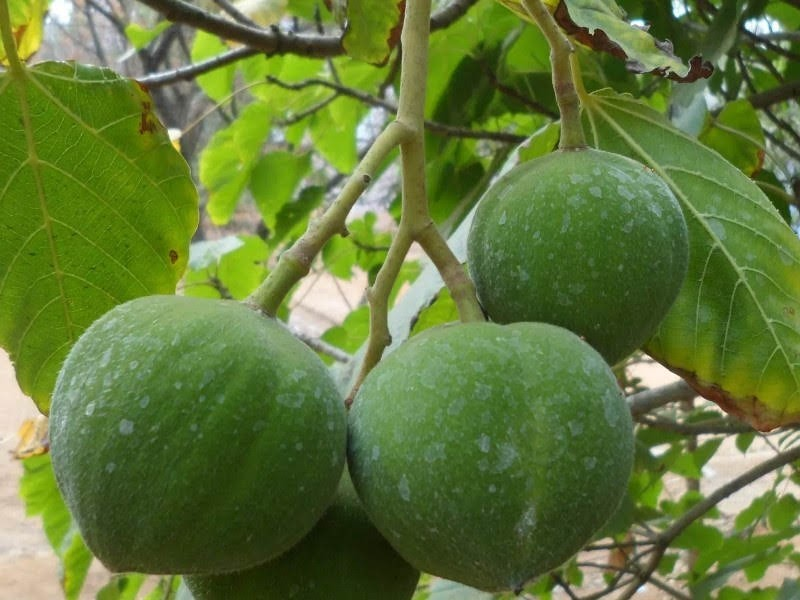
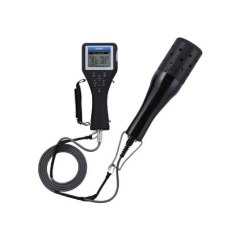
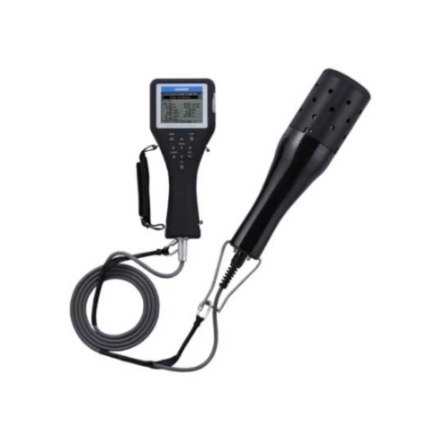

Air Terjun Batu Putu terletak di Desa Batu Putu, Kecamatan Teluk Betung Utara, Kota Bandar Lampung, Lampung.
Area wisata ini memiliki luas sekitar 15 hektare dan menawarkan pemandangan alam yang mempesona, termasuk
kolam pemandian dan sungai di bawah air terjun. Aksesnya mudah dicapai dari pusat kota dengan waktu tempuh
sekitar 15-45 menit, tergantung titik keberangkatan. Pengelolaannya berada di bawah Pemkot Bandar Lampung
dan tidak ada biaya masuk, sehingga menjadi destinasi alam yang terjangkau dan menyegarkan bagi wisatawan.
Lokasi Google Maps
EDUKASI
Berdasarkan standar Baku Mutu Air (Peraturan Pemerintah Indonesia / KLHK), kualitas air yang baik untuk
aktivitas manusia di air terjun. Terdapat beberapa parameter yaitu:
1. Kekeruhan: secara fisik, air harus jernih dengan tingkat kekeruhan (TSS) ≤ 50 mg/L atau semkain keruh
semakin tidak baik, serta tidak berbau.
2. pH: Berdasarkan PP No. 82 Tahun 2001 kualitas air kelas I sampai IV ditetapkan nilai pH minimum 6 dan
nilai maksimum 9 dengan peruntukan air minum, pertanian, peternakan dan budidaya ikan air tawar. Yang artinya
rentang ini adalah standar umum kualitas air bersih untuk kontak manusia pada kegiatan di air terjun misalnya
berenang, bermain air, kegiatan wisata air terjun atau penggunaan non-minum.
3. Kadar BOD: air harus memiliki kadar BOD ≤ 3 mg/L dan COD ≤ 25 mg/L, menunjukkan rendahnya pencemaran
organik.
4. Kandungan DO (oksigen terlarut): minimal 4 mg/L, menandakan ekosistem air yang masih sehat. Zat-zat
lain seperti amonia ≤ 0.5 mg/L, nitrat ≤ 10 mg/L, dan fosfat ≤ 0.2 mg/L juga harus berada dalam batas aman agar
tidak memicu gangguan kesehatan atau eutrofikasi.
Suhu dan kelembaban juga merupakan parameter yang perlu diperhatikan ketika akan mengunjungi air terjun.
Suhu yang ideal untuk kegiatan di air terjun adalah suhu yang nyaman di mana tidak merasa kepanasan atau
kedinginan, umumnya sekitar 25∘C hingga 30∘C, dengan kelembaban yang tidak terlalu tinggi yaitu sekitar 50 -
70%. Kelembaban sedang dan suhu yang hangat atau sejuk (tidak ekstrem) akan membuat kegiatan menjadi lebih
menyenangkan dan tidak mengganggu kenyamanan saat menikmati alam.
Pemantauan kualitas air di Air Terjun Batu Putu dapat dilakukan dengan mengukur parameter penting seperti
pH, suhu, dan kelembapan air. Penggunaan alat pH meter secara rutin membantu mengontrol keseimbangan
keasaman air untuk menjaga ekosistem tetap sehat. Suhu air dicatat untuk mendukung habitat biota air dan
menjaga kenyamanan pengunjung. Kelembapan juga diperhatikan karena mempengaruhi kondisi mikroklimat di
sekitar air terjun. Pengendalian kualitas air ini penting untuk memastikan kelestarian lingkungan dan
keamanan pengunjung.
Peringatan dini cuaca juga dapat diakses secara realtime melalui web BMKG:
BMKG Lampung – Cuaca Realtime
Informasi cuaca realtime Air terjun Batu Putu di Sukadana Ham, Kec. Tj. Karang Barat , Kota Bandar Lampung: suhu, kelembapan, angin, dan potensi hujan.
AMTAST AMT-03R adalah alat ukur kualitas air portable multifungsi yang dapat mengukur enam parameter
sekaligus, yaitu pH, ORP (potensi redoks), konduktivitas listrik, TDS (total padatan terlarut),
salinitas/kadar garam, dan suhu air. Alat ini memiliki rentang pengukuran pH dari -2 sampai 16, ORP dari
-1000 sampai 1000 mV, konduktivitas sampai 20 mS, TDS hingga 1300 ppm, kadar garam hingga 1000 ppm, dan suhu
sampai 90°C. Tingkat akurasinya cukup tinggi, yaitu untuk pH ±0.01, ORP ±2 mV, dan suhu ±0.2°C. Fitur lain
termasuk probe yang bisa dilepas dan diganti, serta kemampuan kalibrasi mandiri dengan cairan buffer untuk
menjaga keakuratan pengukuran. AMTAST AMT-03R banyak digunakan di bidang perikanan, pertanian, industri
pengolahan air bersih, dan pengolahan limbah industry.
Cara penggunaan alat ini relatif sederhana:
Hidupkan alat dan kalibrasi probe menggunakan cairan standar (buffer) sesuai parameter yang ingin diukur
agar hasil pengukuran tetap akurat.
Celupkan probe ke dalam air yang akan diuji dan tunggu laporan nilai pada layar.
Bacaan langsung dapat dilihat pada layar digital, memudahkan pemantauan kondisi air di lapangan.
Setelah selesai, bersihkan probe dan matikan alat.
Horiba U-53-2
Horiba U-53-2 merupakan multi-parameter water quality meter yang juga umum digunakan untuk pengukuran
kualitas air di berbagai lingkungan, termasuk air terjun. Alat ini mampu mengukur parameter seperti pH,
suhu, konduktivitas, dan oksigen terlarut, serta dilengkapi dengan teknologi sensor canggih untuk memberikan
hasil pengukuran yang cepat dan akurat. Alat ini portable dan didesain tahan di berbagai kondisi lapangan
sehingga cocok untuk monitoring lapangan seperti di air terjun atau sumber air alami lainnya.
Cara penggunaan Horiba U-53-2 menurut manual instruksi kerja (dengan dasar instruksi pH meter Horiba yang
sejenis):
Buka tutup pelindung elektroda, bilas elektroda dengan air bebas ion untuk menjaga kebersihan dan
akurasi.
Kalibrasi alat menggunakan larutan standar (buffer) yang sesuai untuk masing-masing parameter yang
diukur.
Celupkan elektroda ke dalam sampel air, tunggu stabilisasi pembacaan pada layar.
Bacalah hasil pengukuran yang muncul pada layar alat.
Setelah selesai, bilas elektroda dengan air bebas ion dan simpan dengan benar untuk perawatan alat agar
tahan lama.
HHBK
Hasil Hutan Bukan Kayu (HHBK) merupakan seluruh produk hutan selain kayu yang memiliki nilai ekonomi,
sosial, dan ekologi tinggi bagi masyarakat yang tinggal di sekitar kawasan hutan. Jenis-jenis HHBK meliputi
rotan, getah, damar, bambu, madu, buah-buahan hutan, serta tanaman obat yang dapat dimanfaatkan untuk
berbagai kebutuhan hidup sehari-hari. Pada kawasan air terjun batu putu HHBK yang dapat di manfaatkan adalah
buah pala dan kemiri.
Buah Pala
Buah pala diproses menjadi produk olahan seperti slay pala, yang memberikan nilai tambah ekonomi bagi
masyarakat lokal. Produk olahan ini tidak hanya berpotensi dijadikan cinderamata bagi pengunjung, tetapi
juga mendukung pengembangan usaha lokal berkelanjutan. Selain itu, limbah dari pengolahan pala dapat
dimanfaatkan untuk pupuk organik, mendukung prinsip ekonomi sirkular dan konservasi lingkungan.
Buah Kemiri

Buah kemiri yang di proses menjadi minyak kemiri. Minyak kemiri diproduksi melalui proses pengolahan biji
kemiri yang telah dibersihkan dan dipanggang, kemudian dihancurkan dan diperas untuk mengeluarkan minyaknya.
Minyak ini banyak dimanfaatkan dalam bidang kecantikan dan kesehatan, terutama sebagai bahan alami untuk
perawatan rambut dan kulit. Selain itu, limbah dari pengolahan kemiri seperti cangkang bisa dimanfaatkan
sebagai biopelet, yaitu bahan bakar alternatif berbentuk pelet padat yang berasal dari biomassa.


 
